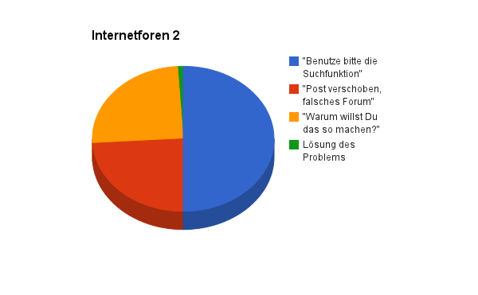

Diese Infografik habe ich beim Graphitti-Blog gefunden und hielt sie für absolut teilenswert. Die meisten werden dieses Martyrium schonmal mit ähnlichen Ergebnissen hinter sich gebracht haben.

Bei Linuxproblemen und Fragen fehlt hier aber definitiv noch ein nicht zu kleiner Anteil an "Lies bitte die Manpage"-Kommentaren ohne weiter Erläuterung. ;-)